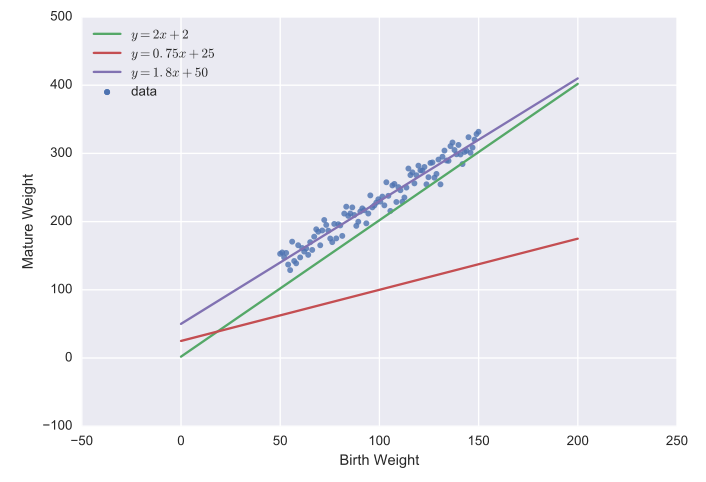

ML101
Francis Tseng (@frnsys)
let's start setting up b/c it will probably take awhile ⏳
git clone https://github.com/frnsys/ml101
cd ml101
pip install -r requirements.txt
jupyter notebook
what we'll cover today
how to use:
scikit-learnfor supervised linear learningkerasfor neural networkspandasfor handling datamatplotlibandseabornfor visualizing data
assumptions
- you have some python 🐍 experience
- you know a bit of high school 🏫 math
What do you know about machine learning? 💬
ok, so what the heck is machine learning doing? what is it even for?
💻🤔
✨~modeling the world~✨
we can model phenomena, both natural and artificial, as mathematical functions
y ⟶ $f(x)$
💫 ⟶ $f(⚛)$
💹 ⟶ $f(📰)$
🎼 ⟶ $f(🎼)$
🎼 ⟶ $f(🎼,😶)$
how could we come up with such a function? 🤔
there are infinitely many of them
we could go and observe a lot of things and then try to figure out some equation that matched what we observed.
🌎👀
but that is a tedious process...
ok, let's have computers do it for us then
🤖
this is in essence what "machine learning" is:
using computers to learn functions from observations (data)
once you learn your mystery function, there's so much you can do with it:
- predict things
- automate things/make decisions
- gain insight into a system
- emulate a system
let's get more concrete
🐄
let's say you're a farmer. you have a herd of cows.
🐄🐄🐄🐄
you want to estimate how heavy a cow will grow to be given its birth weight.
you collect some data which looks like this:

we can try to learn a function that fits this data; i.e. that best describes (models) the relationship between the birth weight and mature weight.
to better appreciate all the help computers give us, let's try this manually first.
this data looks like a line doesn't it?
remember that a line can be described in the general form of
remember that lines vary depending on what the values of

we say that
these parameters define a unique function, and thus when we "learn" a particular function, we are actually learning these parameters!
if we wanted to learn these parameters manually, we could use the good old "guess-and-check" method:

this was an easy dataset - real world data may be much more convoluted, not describable by a line, in many more dimensions, etc...manually figuring out the function gets kinda hard then.

(example in notebook 🗒)
essentially every machine learning technique learns what these parameters are, and one of what differentiates algorithms is the approach with which they do this learning.
another main differentiator is what kinds of functions the algorithm can learn - some can only learn lines, while others can learn much fancier functions.
so how the heck does the algorithm learn the parameters?
🤔
it varies, but usually via a cost or objective function (often notated
this tells the algorithm how "wrong" it is with its current guesses for the parameters on the training data.
the algorithm iteratively tries different parameters (i.e. different guesses at the underlying function) until it can minimize this error.
that is, it tries to optimize the parameters for the cost function.
different optimization algorithms have different ways of picking new guesses.
the most popular one is gradient descent, which looks for the direction in which the error is decreasing, and then takes a step in that direction.
🗻
if we were just finding

if we're finding both

there are other optimization methods such as genetic algorithms, particle swarm optimization, etc...
but gradient descent is by far the most common.
another example:
the office of social health

(based on the psycho-pass series)
ok, let's switch gears and talk about 🎉~neural networks~🎉
they have many, many fun and interesting applications
a neural network does essentially what we were doing before, but it can learn more sophisticated functions 💪🏽

(from neuralnetworksanddeeplearning.com)
one particularly fun kind of neural network is a recurrent neural network

(from hexahedria)
these are great for modeling sequences, e.g. text📝, music🎶, time series🕐, and so on
there are examples abound here, such as generated texts in the style of Finnegan's Wake, endless new episode scripts for Full House, and algorithimically-composed sheet music.
sounds like a lot of fun, but there's one hangup...
🙁
what if the inputs we want to use aren't numbers? 🤔
for example, how do you put a piece of text into a function?
📖 ⟶ 🔢
how do you represent it as a number?
this is the problem of representation, and it is key to machine learning.
coming up with good representations is called feature engineering and it can be more of an art than a skill.
🛠 + 🎨
for text, one option is to map each word to a unique number.
🙃
(example in notebook 🗒)
one last kind of machine learning that I really enjoy:
reinforcement learning
🐶
what we've seen so far is pretty cool, but things really get fun when we start designing agents that can act independently;
where they can interact with an environment on their own, learn from it, and develop new behaviors 🤖
reinforcement learning is behind neat stuff like Google DeepMind's AlphaGo 🏆 and their Atari-playing AIs 🕹
the behavior of the agent can be described by (you guessed it) a function, and of course we want to learn it 🎓
the basic idea:
- we model the world as various states 🙍🏽 the agent can be in.
- the agent can take actions 🏧 that move between these states.
- each state has an associated reward 💰 (or punishment 🗡).
- the agent explores 🗺 these states and learns which sequence of actions tend to lead to more rewards.
this is given to us by a function, usually called

a very simple set of agent states and actions. this agent will eventually spend all of its time sleeping 💤.
a very simple environment for a RL agent is a "grid world"


(example in notebook 🗒)
through this process you've seen how much decision making we as people had to make with regards to what goes into the algorithm, which one we use, and so on.
🤔
hopefully it is clear that machine learning can't be claimed to be "fully objective" 🚽 or anything of the sort
thanks!
if you want to go deeper: frnsys.com/ai_notes/
~ @frnsys